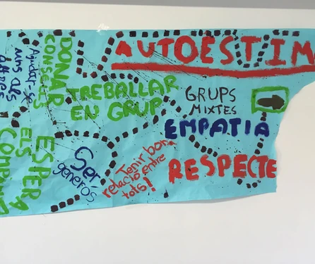
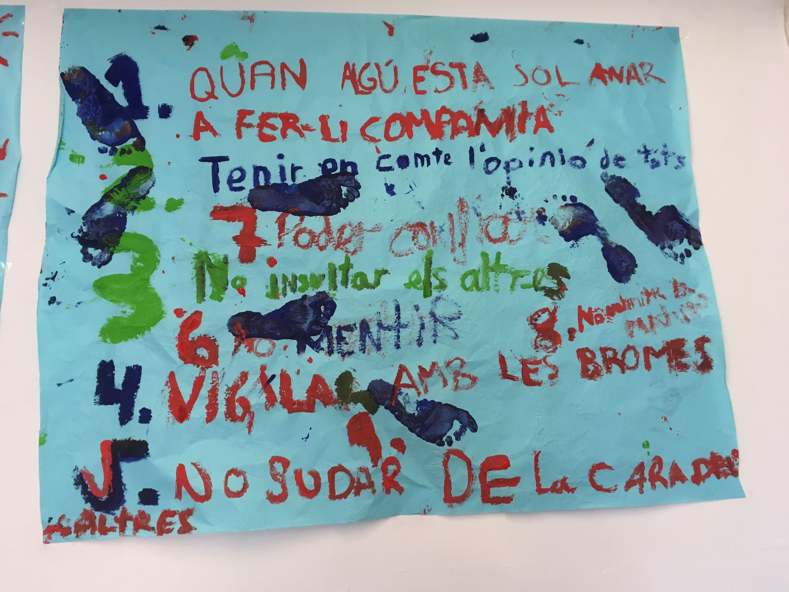
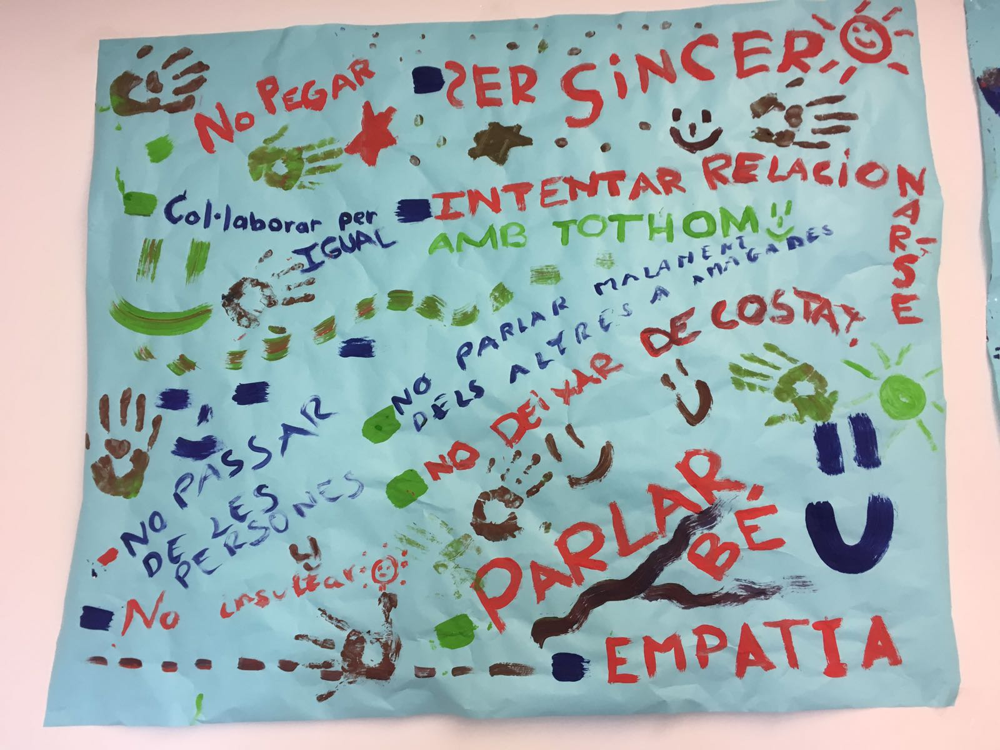
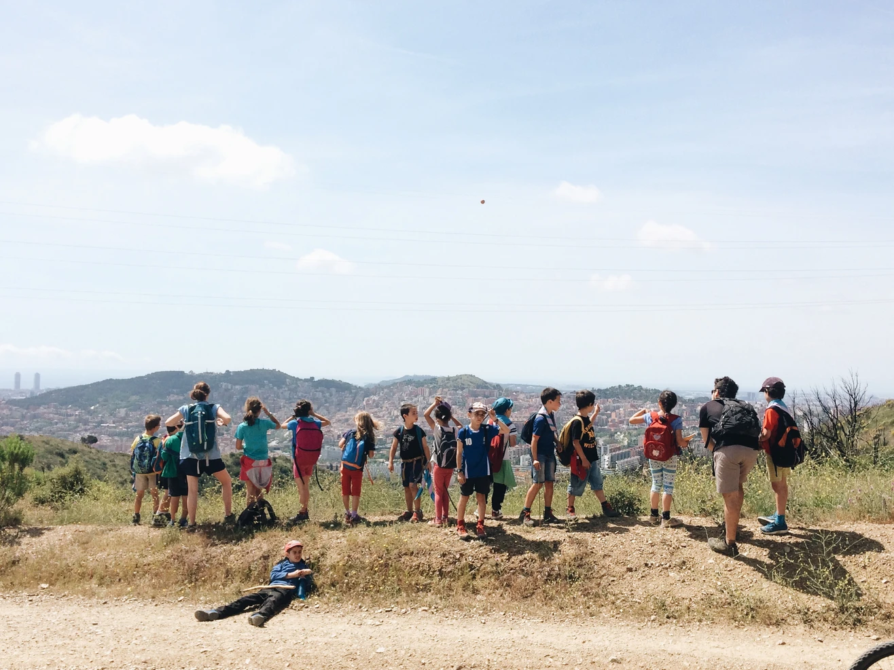
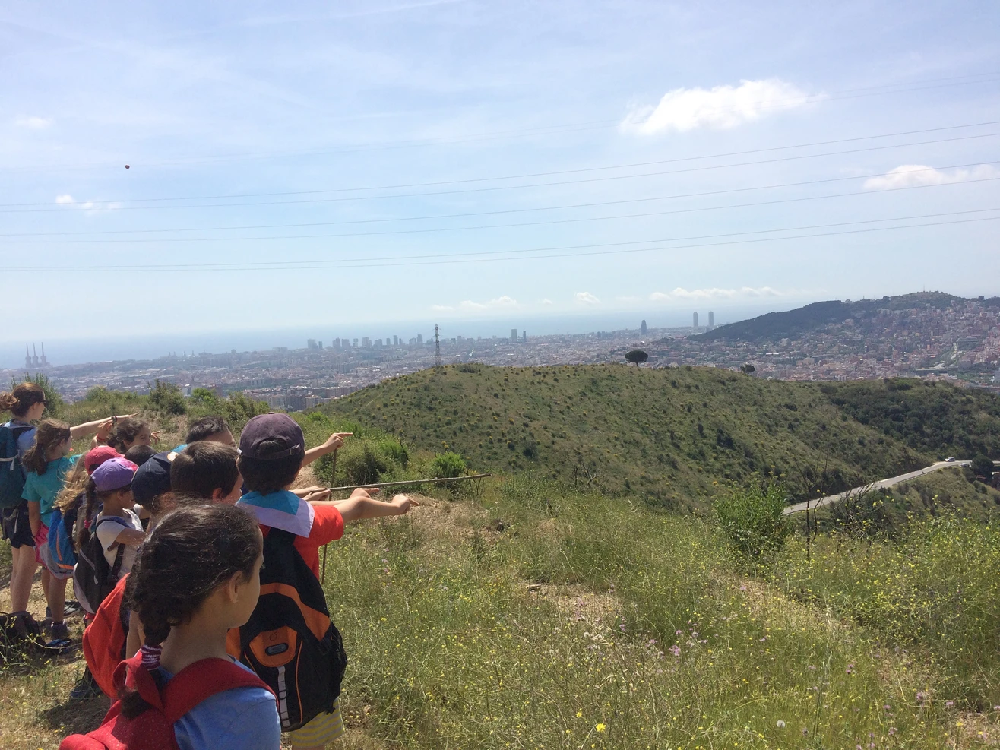
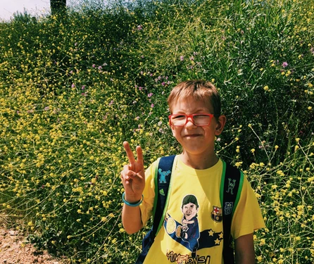
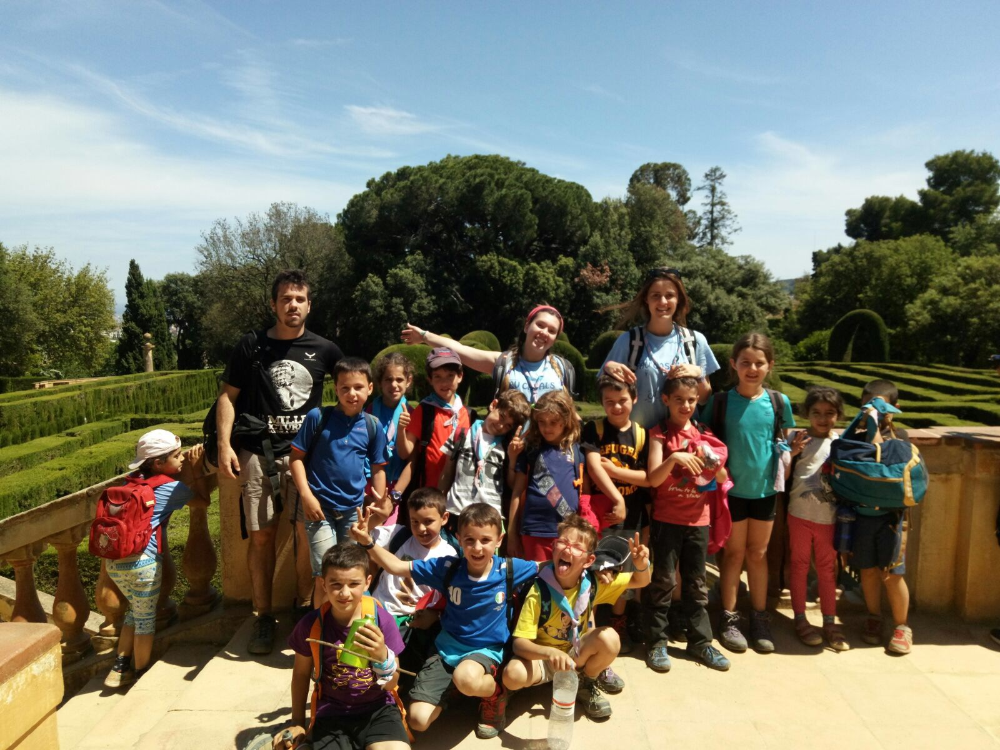
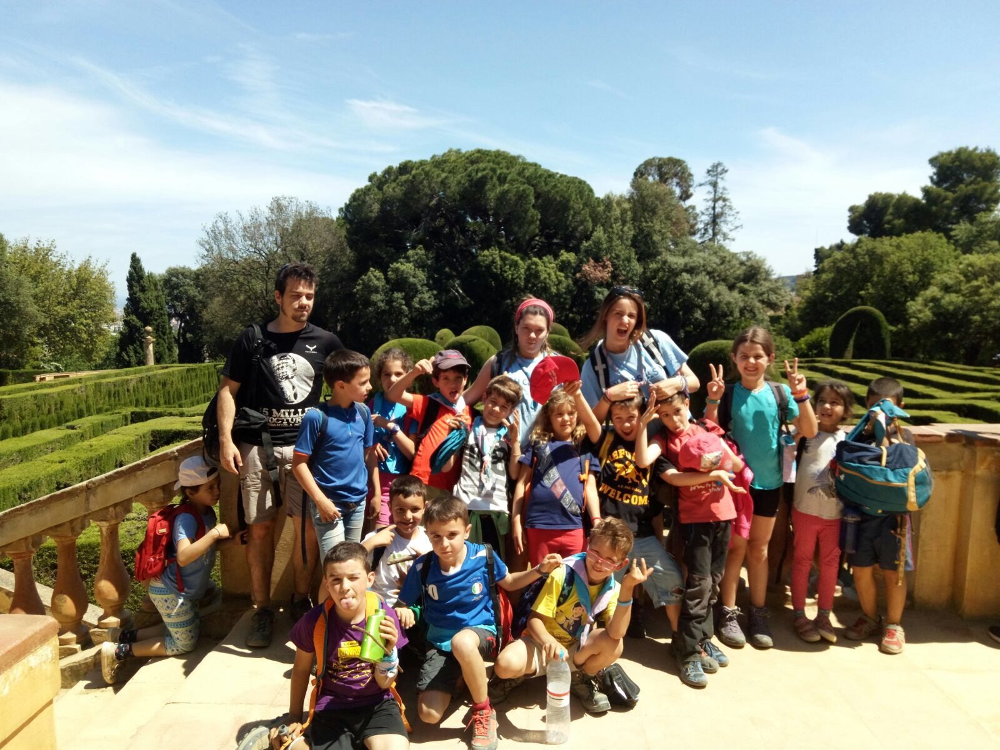
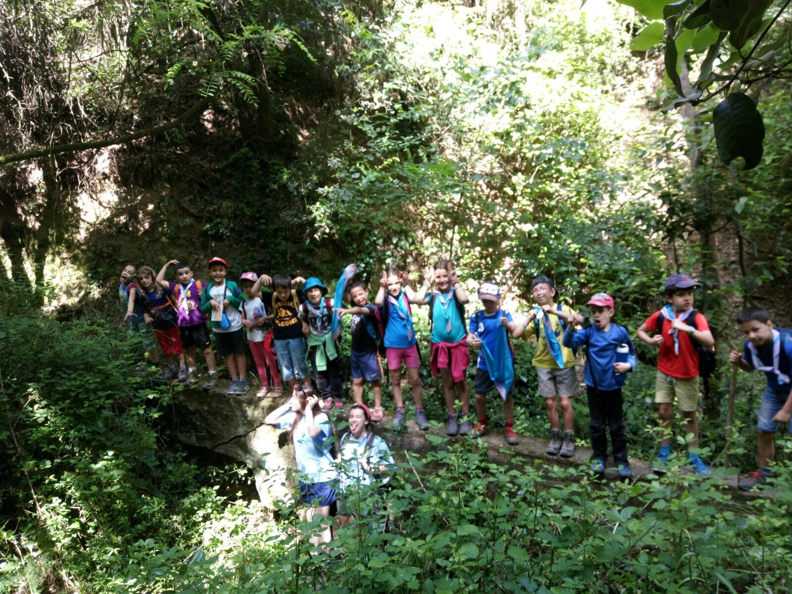
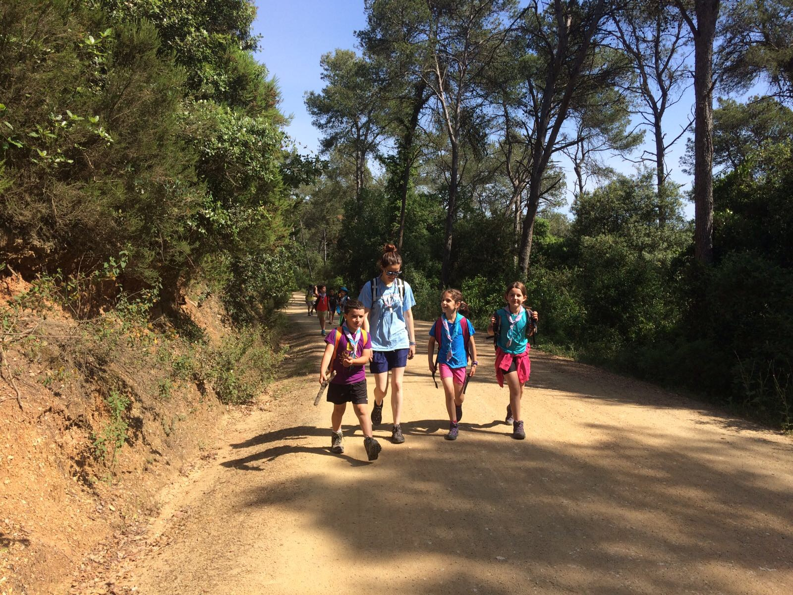

Activitats de les unitats!
31 de maig de 2026
El cap de setmana del 20-21:
Els Estols vam proposar-nos recuperar la flora de Collserola fent un herbari, recollint plantes en base a una guia de plantes que ens va arribar per correu misteriosament. L'objectiu era conèixer les problemàtiques que hi ha en quant a conservació de boscos. Per veure de primera mà els problemes vam anar, ni més ni menys caminant fins al laberint d'Horta (Barcelona). Realment vam poder veure com canviava el paisatge d'una vessant (Vallès) a l'altra (Barcelona) amb una deterioració de les muntanyes important. Amb aquestes reflexions vam acabar l'excursió ben cansats. Després de dinar vam fer tres equips per resoldre el laberint d'Horta (s'ha de dir que alguns caps, és a dir jo, ens vam perdre més que els estols...). Una gran caminada, sou molt graaaans estols! (Fotos a baix!)
Aquest cap de setmana els llops hem marxat a la mogollops!!! Hem viscut moltes experiències, i sobretot hem conegut a mooooolta gent!! En un altre post explicarem amb molta més quantitat de detall tot el que vam viure.
Els i les joves de Secció vam fer molta feina! Vam fer feina de la Pau-kdada: fer instància, tancar llista de material i espais que ens caldran, fer descripció de les activitats, i ja hem convidat a uns 6 caus! Això ja ha agafat forma senyors i senyores! 💪🏿🎉
També vam parlar de la ruta d'estiu i vam decidir que la farem just abans de la ruta de campes, i les empalmarem!! Així que passarem les dues últimes setmanes de juliol tots junts, fent Cau... bff quines ganes! 😍
Entre una cosa i l'altra vam aconseguir, després de varis intents, fer l'estrella! (video), i al final de tot vam retransmetre per video el sorteig que havíem fet per la campanya econòmica, que ja té una feliç i afortuntada guanyadora.
El cap de setmana del 27-28 maig:
Estol es prepara per el cap de setmana vinent, que marxarem tot el cap de setmana. Per preparar-se hem construit una mascota per a cadascú, un animaló dels desitjos on podrem posar els nostres pensaments perque ens ajudi a resoldre els problemes que tinguem... És molt especial i ha sortit moooolt rebé.
Els Llops després de la gran experiència viscuda la setmana anterior, ens vam quedar a casa, al Cau. Vam començar fent un joc que vam aprendre a la Mogollops però després vam conèixer un grup d'amics que s'estimaven molt però tenien alguns problemes interns de convivència. Això ens va portar a fer diferents activitats, a parlar sobre la relació que teníem entre nosaltres, si ens respectem, etc... Al final vam estar d'acord en que hi havien un seguit de passos que havíem de seguir per que la convivència a la unitat fos bona i respectuosa. I com que sabem que la nostra memòria no es precisament com la d'un elefant, ho vam deixar per escrit, perquè no se'n oblides. D'aquesta manera també, si en algun moment sorgeix cap tipus de conflicte poder anar al super chachiposter de colors i recordar tots els consells sobre convivència que vam dir. (A baix us deixem un seguit de fotos perquè pogeu veure com d'artistes som)
Secció marxa a la PioGimcana de Caldes de Montbuí! És una trobada de pioners (secció) d'altres caus... Esperem a veure com els hi anirà, segur que s'ho passen tan bé com saben ells i elles :)
Altres fotos









